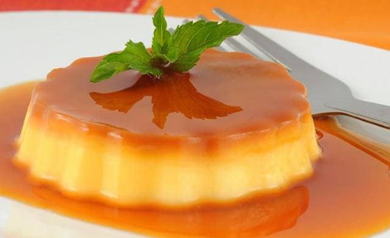

.
This is one of my favorite desserts
because it is something I grew up
making with my mom all the time when
I used to spend time with her baking.
In addition, it tastes delicious and
has this creamy substance that melts
in your mouth right away.
This is another one of my favorite desserts
because it can be made in many different
ways and not just one way. For example,
you can make it with nuts or without nuts.
You could also make it in rolls or just
flat in a tray. Finally, it has a delicious
taste to it that just makes you want more.
This one of my favorite desserts because I
am not a big fan of chocolate but
when I first tasted this, I instantly fell
in love with the taste of chocolate. In
addition, it is also something I always
made with my mom when I was younger.